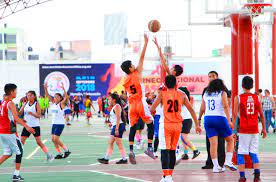
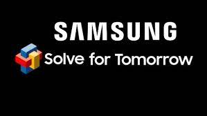

Este proyecto consistió en un café literario que realizamos en la escuela debido a la celebración del
día de muertos donde llevamos a cabo distintas representaciones tradicionales para celebrar ese día. En mi salón realizamos cuentos de terror.

Torneo municipal de Basquetból
Este evento consistió en la organización, por parte del Colegio Anglo, de un evento deportivo,
en este caso, un torneo escolar de Basquetból; llevado a cabo en la Unidad Deportiva de Lázaro Cárdenas.

Solve For Tomorrow
Este proyecto consistió en buscar, delimitar y desarrollar una solución para una problema en nuestro ambiente.
Mi equipo y yo nos dejamos llevar por uno de los promblemas más grandes en nuestra nación, delimitan en nuestro estado
el cual es la Deforestación.